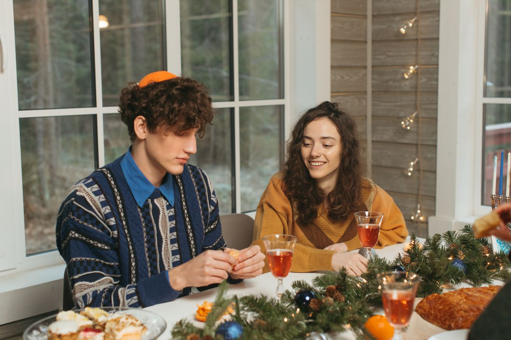

Shani Weiss fries latkes to order — eight nights a year, by the dozen.
Orders for nights 1–3 close Sunday, Nov 29
The Work
Nights I have fried
A latke kitchen doesn't have a portfolio of objects — it has nights. These are the three that explain how I work, told the way they happened: what was asked, what I did, and what came out of the pan. At the bottom, last Hanukkah counted out in full, because a cook who won't show her numbers is selling you something.
Night work · Hanukkah 2025
Three hundred latkes, one shul hall
26 dozen150 guests2 cooks4 pans0 held over 10 minutes
The ask. A Park Slope synagogue's third-night party: 150 people, latkes as the centre of the food, served hot across two hours. The previous year's answer had been a chafing dish, and the committee had opinions about it.
What I did. I took over a corner of their kitchen with four pans and a second cook. We fried in waves of two dozen — classic russet and sweet potato — and held finished latkes on racks in a low oven for minutes at a time while a runner carried trays to the hall. Nobody's latke was ever more than ten minutes from the oil.
The outcome. 312 latkes, and when the last tray went out at nine o'clock it crackled like the first one at seven. The committee booked the same night for this year before the candles were out.
I've chaired this party for six years. It's the first time the latkes were the thing people talked about on the way out.

A hall full of people eating standing up, which is how you know the food worked.
Day work · Hanukkah 2024
The office party that skipped the sandwich platter
15 dozen60 staff2 hot runs40 minutes apart
The ask. A Midtown law office, sixty staff, one lunch hour, and a managing partner who said the words "something better than a sandwich platter" in a planning meeting. Mixed crowd: some keep kosher-style, some are vegan-adjacent, all of them hungry at noon.
What I did. Fifteen dozen across the three kinds — the zucchini & scallion carried the "I don't really like latkes" contingent — delivered in two hot runs forty minutes apart instead of one big cooling drop. Applesauce and sour cream in separate tubs, labelled, because office politics is real.
The outcome. The second run arrived as the first tray emptied. The office has ordered every Hanukkah since, and the order has grown by two dozen a year.
People plan their December calendars around the latke lunch now. I wish I were exaggerating.
Night work · October 2025
A latke bar at a Brooklyn wedding
30 dozen120 guestsfried to order, 9 pm–midnight
The ask. A couple marrying in a Greenpoint warehouse wanted a late-night food station "that smells like somebody's grandmother's kitchen" — their words, and a brief I understood immediately.
What I did. A two-pan station at the edge of the dance floor, frying to order from nine until midnight: classic and sweet potato, with a toppings bar — sour cream, applesauce, scallions, and a hot honey the groom requested and then defended all night.
The outcome. Thirty dozen across three hours, a queue that never fully cleared, and the couple photographed at the pan at eleven, still in their wedding clothes, eating with their hands.
Our guests still text us about the latke bar. The band was also good.
The ledger
Last Hanukkah, night by night
Every dozen I fried in December 2025, counted the way I count them — off the recipe card, one batch at a time. It adds up to the number on the front page.
Night
Date
Where the frying happened
Dozen
Latkes
1
Fri, Dec 4*
Home orders, Crown Heights & Park Slope
18
216
2
Sat, Dec 5*
Home orders + a family party in Flatbush
24
288
3
Sun, Dec 6*
The shul hall, Park Slope (the story above)
26
312
4
Mon, Dec 7*
Home orders, mostly repeat houses
19
228
5
Tue, Dec 8*
Home orders + the office run, Midtown
22
264
6
Wed, Dec 9*
Home orders & two classroom visits
21
252
7
Thu, Dec 10*
Home orders, Prospect Heights
23
276
8
Fri, Dec 11*
Home orders + my own family's table
25
300
Eight nights
178
2,136
*Dates shown are this year's nights (Hanukkah 2026); the counts are last year's frying, kept in the same ledger. The pattern barely moves — night three is always the shul hall, and night eight always ends at my family's table.